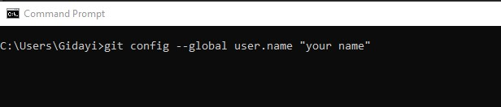
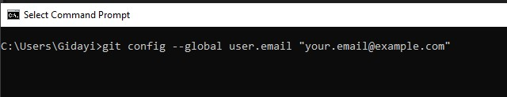

MASTERING GIT
What is Git
Git is a distributed version control system used to track changes in source code during software development. It
helps developers collaborate on projects by allowing them to work on the same codebase without overwriting each other’s work.
Features
- Distributed Version Control System: Git isn’t just a regular version control system it’s distributed. Each developer has their own complete copy of the project’s history (called a repository). Unlike traditional systems, where you rely on a central server, Git lets you work independently, even offline.
- Collaboration and Code Harmony: Git enables seamless collaboration. Developers can clone repositories, work on their changes, and then sync them back to the shared repository.
- Branching and Merging: Developers can create branches to work on new features or fixes independently, then merge these changes back into the main codebase.
- Staging and Committing: Changes are first added to a staging area, where they can be reviewed before being committed (saved) to the project history.
About Git
Git was created by Linus Torvalds, the same person who created the Linux operating system. He developed Git in 2005 to address a problem he was facing while managing the Linux kernel development.
Installing Git
On Windows
- Download Git for Windows: Go to the Official Git Website and download the installer for Windows.
- Run the Installer: Once the download completes, open the .exe file and start the installation process. Follow the default settings in the setup wizard unless you have specific needs.
- Configure Git: After installation, open Git Bash (installed alongside Git) and run the following commands to configure your name and email. 
- Verify Installation: Open Git Bash or Command Prompt and type: git --version If Git is installed correctly, this command will display the installed version number.

Git on macOS
- Use Homebrew (Recommended): If you have Homebrew installed, open the Terminal and run:
- Manual Installation: Alternatively, you can download Git from git-scm.com. After downloading the .dmg file, follow the instructions to install Git.
- Configure Git: Run these commands in your terminal to set your user name and email:
- Verify Installation: Run: It will show the version of Git installed if everything is set up correctly.
git config --global user.email "your.email@example.com"
Installing Git on Linux
- Ubuntu/Debian: Open your terminal and run:
- Fedora: Run:
- Arch Linux: Run:
- Configure Git: Set your user name and email: user.name "Your Name"
- Verify Installation: Run: You should see the version number of Git installed.
Initializing a Git repository
- Open your terminal or command prompt:
Windows: Open Git Bash or Command Prompt.
macOS/Linux: Open your Terminal.
- Navigate to your project folder: Use the cd (change directory) command to navigate to the directory where you want to initialize the repository.
- Initialize the Git repository: Once you're inside the folder, run the following command to initialize an empty Git repository:
- Start Tracking Files: Now that the Git repository is initialized, you can start adding files to the repository, Check the status of your repository:
git status
This will show you which files are untracked (files that Git is not currently tracking).
Add files to the staging area: To add all files in your project directory to Git:
git add .Or, to add specific files:
git add filename.extMake your first commit: After staging the files, you can create your first commit:
git commit -m "Initial commit"Writing Good Commit Messages:
A good commit message is important for understanding the history of your project. Follow these guidelines:
- Start with a short (50 characters or less) summary of what was changed.
- Leave a blank line between the summary and detailed description.
- Use the imperative mood (e.g., “Add feature” instead of “Added feature”).
- Provide a detailed explanation of why changes were made, especially for complex commits.
- Parallel Development: Developers can work on different features in separate branches.
- Code Safety: Changes can be tested in isolation before merging them into the main branch.
- Collaboration: Different team members can work on various tasks without overwriting each other’s work.
For example:
After initialization:
Your project is now a Git repository, and you can start using Git commands to track changes, create branches, and collaborate with others. If you need to connect this local repository to a remote repository (such as on GitHub, GitLab, or Bitbucket), you can do so by running:
git push -u origin master
Viewing Past Commits:
To view the history of past commits, use:
This command will display all previous commits along with their messages and metadata (author, date, etc.).
Reverting to a Previous Commit:To go back to a specific commit, you can use the following command:
Replace
Branches in Git
Branches in Git are used to develop features, bug fixes, or experiments isolated from the main codebase (typically the master or main branch). They are important because they allow multiple developers to work on different parts of a project simultaneously without interfering with each other's work.
Why Branches Are Important:Creating a Branch
To create a new branch in Git, use the following command:
To switch to the new branch right after creating it, use:
Viewing All Branches
To view all the branches in your repository, use the following command:
Switching Active Branches
To switch between branches, use:
Merging a Branch
To merge a branch into the current branch, use the following command:
For example, if you are on the master branch and you want to merge feature-branch into it:
git checkout master
git merge feature-branchDeleting a Branch
After merging a branch, you may want to delete it. To delete a branch, use:
Learn about GitHub:
GitHub is a hosting service for Git repositories, where you can collaborate with others.
Explore pull requests: A pull request is a way to propose changes to a repository on GitHub.
Study rebase: Rebasing is an advanced Git feature for integrating changes from one branch into another without creating a merge commit.